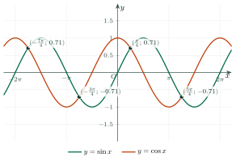
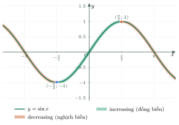
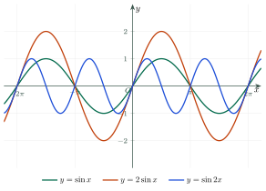
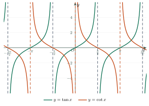
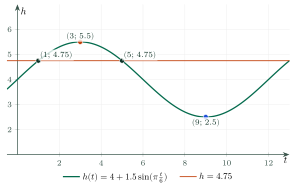

Trigonometric FunctionsHàm số lượng giác
Grade 11 · Topic: Trigonometric FunctionsLớp 11 · Chủ đề: Hàm số lượng giác
1Lesson IntroductionGiới thiệu bài học
Learning goalsMục tiêu bài học
By the end of this lesson you can:
Sau bài học này, em có thể:
state the domain and range of \(\sin x\), \(\cos x\), \(\tan x\) and \(\cot x\);
nêu tập xác định, tập giá trị của \(\sin x\), \(\cos x\), \(\tan x\), \(\cot x\);
find the period and decide whether a function is even or odd;
tìm chu kì và xét tính chẵn lẻ của hàm số;
read the graphs and the intervals where each function is increasing or decreasing;
đọc đồ thị và các khoảng đồng biến, nghịch biến của từng hàm số;
find maximum and minimum values and model a periodic phenomenon.
tìm giá trị lớn nhất, giá trị nhỏ nhất và mô hình hóa một hiện tượng tuần hoàn.
2Mathematical VocabularyTừ vựng Toán học
trigonometric function – a function such as \(y=\sin x\), \(y=\cos x\), \(y=\tan x\), \(y=\cot x\) whose variable is an angle in radians.
Hàm số lượng giác – hàm số như \(y=\sin x\), \(y=\cos x\), \(y=\tan x\), \(y=\cot x\) có biến là số đo góc (radian).
periodic function – a function whose graph repeats after a fixed distance.
Hàm số tuần hoàn – hàm số có đồ thị lặp lại sau một khoảng cố định.
period – the smallest positive \(T\) with \(f(x+T)=f(x)\).
Chu kì – số dương nhỏ nhất \(T\) sao cho \(f(x+T)=f(x)\).
amplitude – half of the difference between the maximum and minimum values; for \(a\sin x\) it is \(|a|\).
Biên độ – một nửa hiệu giữa giá trị lớn nhất và nhỏ nhất; với \(a\sin x\) là \(|a|\).
even function – \(f(-x)=f(x)\); the graph is symmetric about the y-axis.
Hàm số chẵn – \(f(-x)=f(x)\); đồ thị đối xứng qua trục tung.
odd function – \(f(-x)=-f(x)\); the graph is symmetric about the origin.
Hàm số lẻ – \(f(-x)=-f(x)\); đồ thị đối xứng qua gốc tọa độ.
increasing – the values go up as x goes up.
Đồng biến – giá trị hàm số tăng khi x tăng.
decreasing – the values go down as x goes up.
Nghịch biến – giá trị hàm số giảm khi x tăng.
domain – the set of all x for which the function is defined.
Tập xác định – tập các giá trị x mà hàm số xác định.
range – the set of all values that the function takes.
Tập giá trị – tập các giá trị mà hàm số nhận được.
maximum value – the greatest value of the function.
Giá trị lớn nhất – giá trị lớn nhất mà hàm số đạt được.
minimum value – the smallest value of the function.
Giá trị nhỏ nhất – giá trị nhỏ nhất mà hàm số đạt được.
sinusoidal curve – the wave-shaped graph of sine or cosine.
Đường hình sin – đồ thị hình sóng của sin hoặc cos.
3Useful English PhrasesCụm từ tiếng Anh thường gặp
Find the period of the function.
Tìm chu kì của hàm số.
State the domain and the range.
Nêu tập xác định và tập giá trị.
Find the maximum and minimum values.
Tìm giá trị lớn nhất và giá trị nhỏ nhất.
Is the function even, odd or neither?
Hàm số chẵn, lẻ hay không chẵn không lẻ?
On which intervals is the function increasing?
Hàm số đồng biến trên những khoảng nào?
Use the graph to solve the equation.
Dùng đồ thị để giải phương trình.
4Prerequisite ReviewÔn tập kiến thức nền
Special values. \(\sin 0=0\), \(\sin\dfrac{\pi}{2}=1\), \(\sin\pi=0\), \(\cos 0=1\), \(\cos\dfrac{\pi}{2}=0\), \(\cos\pi=-1\).
Giá trị đặc biệt. \(\sin 0=0\), \(\sin\dfrac{\pi}{2}=1\), \(\sin\pi=0\), \(\cos 0=1\), \(\cos\dfrac{\pi}{2}=0\), \(\cos\pi=-1\).
Definitions. \(\tan x=\dfrac{\sin x}{\cos x}\) (\(\cos x\ne 0\)) and \(\cot x=\dfrac{\cos x}{\sin x}\) (\(\sin x\ne 0\)).
Định nghĩa. \(\tan x=\dfrac{\sin x}{\cos x}\) (\(\cos x\ne 0\)) và \(\cot x=\dfrac{\cos x}{\sin x}\) (\(\sin x\ne 0\)).
Parity. \(f\) is even if \(f(-x)=f(x)\) and odd if \(f(-x)=-f(x)\). Example: \(x^2\) is even, \(x^3\) is odd.
Tính chẵn lẻ. \(f\) chẵn nếu \(f(-x)=f(x)\), lẻ nếu \(f(-x)=-f(x)\). Ví dụ: \(x^2\) chẵn, \(x^3\) lẻ.
5TheoryLý thuyết
5.1 Trigonometric functionsHàm số lượng giác
For every real number \(x\) (an angle in radians) there is exactly one value \(\sin x\) and exactly one value \(\cos x\). So \(y=\sin x\) and \(y=\cos x\) are functions defined on \(\mathbb{R}\). The functions \(y=\tan x\) and \(y=\cot x\) are defined by the quotients, so they are not defined everywhere.
Với mỗi số thực \(x\) (số đo góc theo radian) có đúng một giá trị \(\sin x\) và đúng một giá trị \(\cos x\). Vậy \(y=\sin x\) và \(y=\cos x\) là các hàm số xác định trên \(\mathbb{R}\). Các hàm số \(y=\tan x\) và \(y=\cot x\) được định nghĩa bằng thương nên không xác định ở mọi nơi.
DomainsTập xác định
\(y=\sin x\) and \(y=\cos x\): \(D=\mathbb{R}\).
\(y=\sin x\) và \(y=\cos x\): \(D=\mathbb{R}\).
\(y=\tan x\): \(D=\mathbb{R}\setminus\left\{\dfrac{\pi}{2}+k\pi,\ k\in\mathbb{Z}\right\}\) (where \(\cos x=0\) is excluded).
\(y=\tan x\): \(D=\mathbb{R}\setminus\left\{\dfrac{\pi}{2}+k\pi,\ k\in\mathbb{Z}\right\}\) (loại các điểm \(\cos x=0\)).
\(y=\cot x\): \(D=\mathbb{R}\setminus\left\{k\pi,\ k\in\mathbb{Z}\right\}\) (where \(\sin x=0\) is excluded).
\(y=\cot x\): \(D=\mathbb{R}\setminus\left\{k\pi,\ k\in\mathbb{Z}\right\}\) (loại các điểm \(\sin x=0\)).
5.2 Periodic functions and parityHàm số tuần hoàn. Hàm số chẵn, hàm số lẻ
Periodic functionHàm số tuần hoàn
A function \(f\) is periodic if there is a number \(T\ne 0\) such that \(x\pm T\) is in the domain whenever \(x\) is, and \(f(x+T)=f(x)\). The smallest positive such \(T\) is the period.
Hàm số \(f\) gọi là hàm số tuần hoàn nếu có số \(T\ne 0\) sao cho với mọi \(x\) thuộc tập xác định thì \(x\pm T\) cũng thuộc tập xác định và \(f(x+T)=f(x)\). Số \(T\) dương nhỏ nhất như vậy gọi là chu kì.
\(\sin x\) and \(\cos x\) have period \(2\pi\); \(\tan x\) and \(\cot x\) have period \(\pi\).
\(\sin x\) và \(\cos x\) có chu kì \(2\pi\); \(\tan x\) và \(\cot x\) có chu kì \(\pi\).
For \(y=\sin(bx+c)\) or \(y=\cos(bx+c)\) the period is \(\dfrac{2\pi}{|b|}\); for \(y=\tan(bx+c)\) or \(y=\cot(bx+c)\) it is \(\dfrac{\pi}{|b|}\).
Với \(y=\sin(bx+c)\) hoặc \(y=\cos(bx+c)\) chu kì là \(\dfrac{2\pi}{|b|}\); với \(y=\tan(bx+c)\) hoặc \(y=\cot(bx+c)\) chu kì là \(\dfrac{\pi}{|b|}\).
Even and odd functionsHàm số chẵn, hàm số lẻ
\(\cos x\) is even: \(\cos(-x)=\cos x\), so its graph is symmetric about the y-axis. \(\sin x\), \(\tan x\) and \(\cot x\) are odd: \(f(-x)=-f(x)\), so their graphs are symmetric about the origin.
\(\cos x\) là hàm số chẵn: \(\cos(-x)=\cos x\), đồ thị đối xứng qua trục tung. \(\sin x\), \(\tan x\), \(\cot x\) là hàm số lẻ: \(f(-x)=-f(x)\), đồ thị đối xứng qua gốc tọa độ.
To test parity, the domain must also be symmetric about \(0\) (if \(x\) is in the domain, so is \(-x\)).
Khi xét tính chẵn lẻ, tập xác định phải đối xứng qua \(0\) (nếu \(x\) thuộc tập xác định thì \(-x\) cũng thuộc).
5.3 The functions y = sin x and y = cos xHàm số y = sin x và y = cos x

| PropertyTính chất | \(y=\sin x\)\(y=\sin x\) | \(y=\cos x\)\(y=\cos x\) |
|---|---|---|
| domaintập xác định | \(\mathbb{R}\) | \(\mathbb{R}\) |
| rangetập giá trị | \([-1;1]\) | \([-1;1]\) |
| periodchu kì | \(2\pi\) | \(2\pi\) |
| paritytính chẵn lẻ | oddlẻ | evenchẵn |
| increasing onđồng biến trên | \(\left(-\dfrac{\pi}{2}+k2\pi;\ \dfrac{\pi}{2}+k2\pi\right)\) | \((-\pi+k2\pi;\ k2\pi)\) |
| decreasing onnghịch biến trên | \(\left(\dfrac{\pi}{2}+k2\pi;\ \dfrac{3\pi}{2}+k2\pi\right)\) | \((k2\pi;\ \pi+k2\pi)\) |

Effect of the numbers a, b, c, dẢnh hưởng của các số a, b, c, d
The amplitude is \(|a|\); the period is \(\dfrac{2\pi}{|b|}\); \(c\) shifts the wave horizontally; \(d\) shifts it vertically. The maximum value is \(|a|+d\) and the minimum value is \(-|a|+d\).
Biên độ là \(|a|\); chu kì là \(\dfrac{2\pi}{|b|}\); \(c\) dời đồ thị theo chiều ngang; \(d\) dời theo chiều dọc. Giá trị lớn nhất là \(|a|+d\), giá trị nhỏ nhất là \(-|a|+d\).

5.4 The functions y = tan x and y = cot xHàm số y = tan x và y = cot x

| PropertyTính chất | \(y=\tan x\)\(y=\tan x\) | \(y=\cot x\)\(y=\cot x\) |
|---|---|---|
| domaintập xác định | \(\mathbb{R}\setminus\left\{\dfrac{\pi}{2}+k\pi\right\}\) | \(\mathbb{R}\setminus\{k\pi\}\) |
| rangetập giá trị | \(\mathbb{R}\) | \(\mathbb{R}\) |
| periodchu kì | \(\pi\) | \(\pi\) |
| paritytính chẵn lẻ | oddlẻ | oddlẻ |
| monotonic ontính đơn điệu | increasing on \(\left(-\dfrac{\pi}{2}+k\pi;\ \dfrac{\pi}{2}+k\pi\right)\)đồng biến trên \(\left(-\dfrac{\pi}{2}+k\pi;\ \dfrac{\pi}{2}+k\pi\right)\) | decreasing on \((k\pi;\ \pi+k\pi)\)nghịch biến trên \((k\pi;\ \pi+k\pi)\) |
Watch out!Lưu ý
For \(y=\tan(bx)\) the period is \(\dfrac{\pi}{|b|}\), not \(\dfrac{2\pi}{|b|}\). The function \(\tan x\) is increasing on each interval where it is defined, but it is not increasing on the whole domain.
Với \(y=\tan(bx)\) chu kì là \(\dfrac{\pi}{|b|}\), không phải \(\dfrac{2\pi}{|b|}\). Hàm \(\tan x\) đồng biến trên từng khoảng mà nó xác định, nhưng không đồng biến trên cả tập xác định.
6Worked ExamplesVí dụ có lời giải
ExampleVí dụ 1BasicCơ bản – Domain of tangent and cotangentTập xác định của hàm tan và cot
Find the domain of
(a) \(y=\tan\left(x-\dfrac{\pi}{3}\right)\);
(b) \(y=\cot 2x\).
Tìm tập xác định của
(a) \(y=\tan\left(x-\dfrac{\pi}{3}\right)\);
(b) \(y=\cot 2x\).
Analysis: \(\tan u\) needs \(u\ne\dfrac{\pi}{2}+k\pi\); \(\cot u\) needs \(u\ne k\pi\).
Phân tích: \(\tan u\) cần \(u\ne\dfrac{\pi}{2}+k\pi\); \(\cot u\) cần \(u\ne k\pi\).
(a) \(x-\dfrac{\pi}{3}\ne\dfrac{\pi}{2}+k\pi\Rightarrow x\ne\dfrac{5\pi}{6}+k\pi\).
(a) \(x-\dfrac{\pi}{3}\ne\dfrac{\pi}{2}+k\pi\Rightarrow x\ne\dfrac{5\pi}{6}+k\pi\).
(b) \(2x\ne k\pi\Rightarrow x\ne\dfrac{k\pi}{2}\).
(b) \(2x\ne k\pi\Rightarrow x\ne\dfrac{k\pi}{2}\).
ExampleVí dụ 2BasicCơ bản – Even, odd or neitherChẵn, lẻ hay không chẵn không lẻ
Decide whether each function is even, odd or neither:
(a) \(y=x\sin x\);
(b) \(y=\sin x+\cos x\).
Xét tính chẵn lẻ của mỗi hàm số:
(a) \(y=x\sin x\);
(b) \(y=\sin x+\cos x\).
Analysis: The domain is \(\mathbb{R}\) (symmetric). Compare \(f(-x)\) with \(f(x)\) and \(-f(x)\).
Phân tích: Tập xác định là \(\mathbb{R}\) (đối xứng). So sánh \(f(-x)\) với \(f(x)\) và \(-f(x)\).
(a) \(f(-x)=(-x)\sin(-x)=(-x)(-\sin x)=x\sin x=f(x)\): even.
(a) \(f(-x)=(-x)\sin(-x)=(-x)(-\sin x)=x\sin x=f(x)\): hàm số chẵn.
(b) \(f(-x)=-\sin x+\cos x\). At \(x=\dfrac{\pi}{4}\): \(f\left(\dfrac{\pi}{4}\right)=\sqrt2\) but \(f\left(-\dfrac{\pi}{4}\right)=0\), which is neither \(\sqrt2\) nor \(-\sqrt2\). So \(f(-x)\ne f(x)\) and \(f(-x)\ne -f(x)\).
(b) \(f(-x)=-\sin x+\cos x\). Tại \(x=\dfrac{\pi}{4}\): \(f\left(\dfrac{\pi}{4}\right)=\sqrt2\) còn \(f\left(-\dfrac{\pi}{4}\right)=0\), khác cả \(\sqrt2\) lẫn \(-\sqrt2\). Vậy \(f(-x)\ne f(x)\) và \(f(-x)\ne -f(x)\).
ExampleVí dụ 3IntermediateTrung bình – Maximum and minimum valuesGiá trị lớn nhất, nhỏ nhất
Find the maximum and minimum values of \(y=2-3\cos x\) and say for which \(x\) they occur.
Tìm giá trị lớn nhất và nhỏ nhất của \(y=2-3\cos x\) và cho biết đạt tại những \(x\) nào.
Analysis: Start from \(-1\le\cos x\le 1\) and multiply by \(-3\) (the inequality turns around).
Phân tích: Xuất phát từ \(-1\le\cos x\le 1\) rồi nhân với \(-3\) (bất đẳng thức đổi chiều).
\(-3\le -3\cos x\le 3\), so \(-1\le 2-3\cos x\le 5\).
\(-3\le -3\cos x\le 3\) nên \(-1\le 2-3\cos x\le 5\).
Maximum \(5\) when \(\cos x=-1\), i.e. \(x=\pi+k2\pi\).
Giá trị lớn nhất \(5\) khi \(\cos x=-1\), tức \(x=\pi+k2\pi\).
Minimum \(-1\) when \(\cos x=1\), i.e. \(x=k2\pi\).
Giá trị nhỏ nhất \(-1\) khi \(\cos x=1\), tức \(x=k2\pi\).
ExampleVí dụ 4AdvancedNâng cao – Period of a sumChu kì của một tổng
Show that \(2\pi\) is the period of \(y=\sin 2x+\cos 3x\).
Chứng tỏ \(2\pi\) là chu kì của \(y=\sin 2x+\cos 3x\).
Analysis: \(\sin 2x\) has period \(\pi\); \(\cos 3x\) has period \(\dfrac{2\pi}{3}\). A common period must be a multiple of both.
Phân tích: \(\sin 2x\) có chu kì \(\pi\); \(\cos 3x\) có chu kì \(\dfrac{2\pi}{3}\). Chu kì chung phải là bội của cả hai.
The common multiples of \(\pi\) and \(\dfrac{2\pi}{3}\) are \(2\pi,4\pi,\dots\); the smallest is \(2\pi\) (\(2\pi=2\cdot\pi=3\cdot\dfrac{2\pi}{3}\)).
Các bội chung của \(\pi\) và \(\dfrac{2\pi}{3}\) là \(2\pi,4\pi,\dots\); nhỏ nhất là \(2\pi\) (\(2\pi=2\cdot\pi=3\cdot\dfrac{2\pi}{3}\)).
Check: \(\sin(2x+4\pi)=\sin 2x\) and \(\cos(3x+6\pi)=\cos 3x\), so \(f(x+2\pi)=f(x)\).
Kiểm tra: \(\sin(2x+4\pi)=\sin 2x\) và \(\cos(3x+6\pi)=\cos 3x\) nên \(f(x+2\pi)=f(x)\).
A smaller candidate fails: for \(T=\pi\), \(\cos(3x+3\pi)=-\cos 3x\), so \(f(x+\pi)\ne f(x)\).
Ứng viên nhỏ hơn không đúng: với \(T=\pi\), \(\cos(3x+3\pi)=-\cos 3x\) nên \(f(x+\pi)\ne f(x)\).
ExampleVí dụ 5AdvancedNâng cao – Modelling the tideMô hình hóa thủy triều
At a harbour the water depth (in metres) \(t\) hours after midnight is \(h(t)=4+1.5\sin\dfrac{\pi t}{6}\). Find the period, the highest and lowest depth, and the times in \([0;12]\) when \(h=4.75\).
Ở một bến cảng, độ sâu của nước (mét) sau \(t\) giờ kể từ nửa đêm là \(h(t)=4+1{,}5\sin\dfrac{\pi t}{6}\). Tìm chu kì, độ sâu lớn nhất và nhỏ nhất, và các thời điểm trong \([0;12]\) mà \(h=4{,}75\).

Analysis: It has the form \(a\sin(bt)+d\) with \(a=1.5\), \(b=\dfrac{\pi}{6}\), \(d=4\).
Phân tích: Hàm có dạng \(a\sin(bt)+d\) với \(a=1{,}5\), \(b=\dfrac{\pi}{6}\), \(d=4\).
Period: \(\dfrac{2\pi}{\dfrac{\pi}{6}}=12\) hours.
Chu kì: \(\dfrac{2\pi}{\dfrac{\pi}{6}}=12\) giờ.
Highest: \(4+1.5=5.5\) m (at \(t=3\)); lowest: \(4-1.5=2.5\) m (at \(t=9\)).
Lớn nhất: \(4+1{,}5=5{,}5\) m (tại \(t=3\)); nhỏ nhất: \(4-1{,}5=2{,}5\) m (tại \(t=9\)).
\(h=4.75\) means \(\sin\dfrac{\pi t}{6}=0.5\), so \(\dfrac{\pi t}{6}=\dfrac{\pi}{6}\) or \(\dfrac{5\pi}{6}\) (in \([0;2\pi]\)).
\(h=4{,}75\) nghĩa là \(\sin\dfrac{\pi t}{6}=0{,}5\), nên \(\dfrac{\pi t}{6}=\dfrac{\pi}{6}\) hoặc \(\dfrac{5\pi}{6}\) (trong \([0;2\pi]\)).
So \(t=1\) or \(t=5\): the depth is 4.75 m at 1:00 and at 5:00.
Vậy \(t=1\) hoặc \(t=5\): độ sâu là 4,75 m lúc 1 giờ và lúc 5 giờ.
7PracticeBài tập luyện tập
A. Multiple ChoiceA. Trắc nghiệm
What is the period of \(y=\sin 2x\)?
Chu kì của \(y=\sin 2x\) là bao nhiêu?
Answer: b. \(\dfrac{2\pi}{2}=\pi\).
Đáp án b. \(\dfrac{2\pi}{2}=\pi\).
What is the domain of \(y=\cot x\)?
Tập xác định của \(y=\cot x\) là gì?
Answer: b. \(\cot x\) is not defined where \(\sin x=0\), i.e. \(x=k\pi\).
Đáp án b. \(\cot x\) không xác định khi \(\sin x=0\), tức \(x=k\pi\).
What is the maximum value of \(y=3\sin x\)?
Giá trị lớn nhất của \(y=3\sin x\) là bao nhiêu?
Answer: b. \(\sin x\le 1\), so \(3\sin x\le 3\).
Đáp án b. \(\sin x\le 1\) nên \(3\sin x\le 3\).
B. True or FalseB. Đúng hoặc sai
\(y=\cos x\) is an even function.
\(y=\cos x\) là hàm số chẵn.
True. \(\cos(-x)=\cos x\).
Đúng. \(\cos(-x)=\cos x\).
\(y=\sin x\) is increasing on \(\left(0;\dfrac{\pi}{2}\right)\).
\(y=\sin x\) đồng biến trên \(\left(0;\dfrac{\pi}{2}\right)\).
True. \(\sin x\) is increasing on \(\left(-\dfrac{\pi}{2};\dfrac{\pi}{2}\right)\).
Đúng. \(\sin x\) đồng biến trên \(\left(-\dfrac{\pi}{2};\dfrac{\pi}{2}\right)\).
C. Short AnswerC. Trả lời ngắn
Find the maximum value of \(y=2\sin x+1\).
Tìm giá trị lớn nhất của \(y=2\sin x+1\).
Enter a number.
Nhập một số.
Answer: 3. \(2\cdot 1+1=3\).
Đáp số: 3. \(2\cdot 1+1=3\).
How many solutions does \(\sin x=\dfrac12\) have in \([0;2\pi]\)?
Phương trình \(\sin x=\dfrac12\) có bao nhiêu nghiệm trong \([0;2\pi]\)?
Enter a whole number.
Nhập một số nguyên.
Answer: 2. They are \(\dfrac{\pi}{6}\) and \(\dfrac{5\pi}{6}\).
Đáp số: 2. Đó là \(\dfrac{\pi}{6}\) và \(\dfrac{5\pi}{6}\).
A. Multiple ChoiceA. Trắc nghiệm
What is the period of \(y=\cos\dfrac{x}{2}\)?
Chu kì của \(y=\cos\dfrac{x}{2}\) là bao nhiêu?
Answer: c. \(\dfrac{2\pi}{\dfrac{1}{2}}=4\pi\).
Đáp án c. \(\dfrac{2\pi}{\dfrac{1}{2}}=4\pi\).
What is the range of \(y=4\cos x\)?
Tập giá trị của \(y=4\cos x\) là gì?
Answer: c. \(-4\le 4\cos x\le 4\).
Đáp án c. \(-4\le 4\cos x\le 4\).
What is the maximum value of \(y=2-\cos x\)?
Giá trị lớn nhất của \(y=2-\cos x\) là bao nhiêu?
Answer: c. The greatest value happens when \(\cos x=-1\): \(2-(-1)=3\).
Đáp án c. Giá trị lớn nhất đạt khi \(\cos x=-1\): \(2-(-1)=3\).
B. True or FalseB. Đúng hoặc sai
\(y=\sin x\) is an even function.
\(y=\sin x\) là hàm số chẵn.
False. \(\sin(-x)=-\sin x\): it is odd.
Sai. \(\sin(-x)=-\sin x\): đây là hàm số lẻ.
\(y=\cos x\) is increasing on \(\left(0;\dfrac{\pi}{2}\right)\).
\(y=\cos x\) đồng biến trên \(\left(0;\dfrac{\pi}{2}\right)\).
False. \(\cos x\) is decreasing on \((0;\pi)\).
Sai. \(\cos x\) nghịch biến trên \((0;\pi)\).
C. Short AnswerC. Trả lời ngắn
Find the minimum value of \(y=3\cos x-2\).
Tìm giá trị nhỏ nhất của \(y=3\cos x-2\).
Enter a number.
Nhập một số.
Answer: \(-5\). \(3\cdot(-1)-2=-5\).
Đáp số: \(-5\). \(3\cdot(-1)-2=-5\).
How many solutions does \(\cos x=-1\) have in \([0;2\pi]\)?
Phương trình \(\cos x=-1\) có bao nhiêu nghiệm trong \([0;2\pi]\)?
Enter a whole number.
Nhập một số nguyên.
Answer: 1. Only \(x=\pi\).
Đáp số: 1. Chỉ có \(x=\pi\).
A. Multiple ChoiceA. Trắc nghiệm
What is the period of \(y=\tan 3x\)?
Chu kì của \(y=\tan 3x\) là bao nhiêu?
Answer: a. \(\dfrac{\pi}{3}\), because the period of tangent is \(\pi\).
Đáp án a. \(\dfrac{\pi}{3}\), vì chu kì của hàm tan là \(\pi\).
What is the domain of \(y=\tan 2x\)?
Tập xác định của \(y=\tan 2x\) là gì?
Answer: d. \(2x\ne\dfrac{\pi}{2}+k\pi\Rightarrow x\ne\dfrac{\pi}{4}+\dfrac{k\pi}{2}\).
Đáp án d. \(2x\ne\dfrac{\pi}{2}+k\pi\Rightarrow x\ne\dfrac{\pi}{4}+\dfrac{k\pi}{2}\).
What is the maximum value of \(y=3-2\sin x\)?
Giá trị lớn nhất của \(y=3-2\sin x\) là bao nhiêu?
Answer: c. The greatest value happens when \(\sin x=-1\): \(3+2=5\).
Đáp án c. Giá trị lớn nhất đạt khi \(\sin x=-1\): \(3+2=5\).
B. True or FalseB. Đúng hoặc sai
\(y=\tan x\) is an odd function.
\(y=\tan x\) là hàm số lẻ.
True. \(\tan(-x)=-\tan x\) and the domain is symmetric.
Đúng. \(\tan(-x)=-\tan x\) và tập xác định đối xứng.
\(y=\cot x\) is decreasing on \((0;\pi)\).
\(y=\cot x\) nghịch biến trên \((0;\pi)\).
True. \(\cot x\) is decreasing on every interval \((k\pi;\pi+k\pi)\).
Đúng. \(\cot x\) nghịch biến trên mỗi khoảng \((k\pi;\pi+k\pi)\).
C. Short AnswerC. Trả lời ngắn
Find the maximum value of \(y=5-2\cos x\).
Tìm giá trị lớn nhất của \(y=5-2\cos x\).
Enter a number.
Nhập một số.
Answer: 7. The greatest value is at \(\cos x=-1\): \(5+2=7\).
Đáp số: 7. Giá trị lớn nhất đạt khi \(\cos x=-1\): \(5+2=7\).
How many solutions does \(\cos x=1.2\) have in \([0;2\pi]\)?
Phương trình \(\cos x=1{,}2\) có bao nhiêu nghiệm trong \([0;2\pi]\)?
Enter a whole number.
Nhập một số nguyên.
Answer: 0, because \(\cos x\le 1\).
Đáp số: 0, vì \(\cos x\le 1\).
8Common MistakesLỗi thường gặp
Periods. Giving \(2\pi\) as the period of \(\tan x\). The period of \(\tan x\) is \(\pi\).
Chu kì. Cho rằng chu kì của \(\tan x\) là \(2\pi\). Chu kì của \(\tan x\) là \(\pi\).
Using formulas. Writing the period of \(y=\sin 2x\) as \(2\pi\cdot 2\). Correct: \(\dfrac{2\pi}{2}=\pi\).
Dùng công thức. Viết chu kì của \(y=\sin 2x\) là \(2\pi\cdot 2\). Đúng: \(\dfrac{2\pi}{2}=\pi\).
Extreme values. Forgetting that \(a\) can be negative: for \(y=3-2\sin x\), the maximum comes from \(\sin x=-1\).
Giá trị lớn nhất, nhỏ nhất. Quên rằng \(a\) có thể âm: với \(y=3-2\sin x\), giá trị lớn nhất đạt khi \(\sin x=-1\).
Parity. Deciding even or odd without checking that the domain is symmetric, or saying \(\sin x+\cos x\) is even because \(\cos x\) is.
Chẵn lẻ. Kết luận chẵn lẻ mà không kiểm tra tập xác định đối xứng, hoặc cho rằng \(\sin x+\cos x\) chẵn vì \(\cos x\) chẵn.
Reading graphs. Joining the branches of \(\tan x\) across its vertical asymptotes, or saying \(\tan x\) is increasing on its whole domain.
Đọc đồ thị. Nối các nhánh của \(\tan x\) qua các tiệm cận đứng, hoặc nói \(\tan x\) đồng biến trên cả tập xác định.
9Lesson SummaryTổng kết
\(\sin x\) and \(\cos x\): domain \(\mathbb{R}\), range \([-1;1]\), period \(2\pi\); sine is odd, cosine is even.
\(\sin x\) và \(\cos x\): tập xác định \(\mathbb{R}\), tập giá trị \([-1;1]\), chu kì \(2\pi\); sin lẻ, cos chẵn.
\(\tan x\): period \(\pi\), undefined at \(\dfrac{\pi}{2}+k\pi\); \(\cot x\): period \(\pi\), undefined at \(k\pi\); both have range \(\mathbb{R}\) and are odd.
\(\tan x\): chu kì \(\pi\), không xác định tại \(\dfrac{\pi}{2}+k\pi\); \(\cot x\): chu kì \(\pi\), không xác định tại \(k\pi\); cả hai có tập giá trị \(\mathbb{R}\) và là hàm số lẻ.
For \(y=a\sin(bx+c)+d\): amplitude \(|a|\), period \(\dfrac{2\pi}{|b|}\), maximum \(|a|+d\), minimum \(-|a|+d\).
Với \(y=a\sin(bx+c)+d\): biên độ \(|a|\), chu kì \(\dfrac{2\pi}{|b|}\), lớn nhất \(|a|+d\), nhỏ nhất \(-|a|+d\).
Sine increases on (−π/2; π/2) and decreases on (π/2; 3π/2); cosine decreases on (0; π) and increases on (π; 2π); tan increases and cot decreases on every interval of their domain.
sin đồng biến trên (−π/2; π/2), nghịch biến trên (π/2; 3π/2); cos nghịch biến trên (0; π), đồng biến trên (π; 2π); tan đồng biến, cot nghịch biến trên từng khoảng thuộc tập xác định.
Key English phrases: find the period; state the domain and range; find the maximum value; on which intervals is the function increasing.
Cụm tiếng Anh cần nhớ: find the period (tìm chu kì); state the domain and range (nêu tập xác định và tập giá trị); find the maximum value (tìm giá trị lớn nhất); on which intervals is the function increasing (đồng biến trên những khoảng nào).